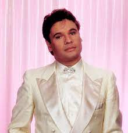

Nació el 7 de enero de 1950 en Parácuaro, Michoacán. Hijo de Gabriel Aguilera Rodríguez, arriero de Jacona, Michoacán, y de Victoria Valadez Rojas de Aguilera, campesina de Parácuaro, Michoacán. Fue el menor de 10 hermanos, Rosa, quién murió casi recién nacida; Victoria, única y consentida hermana; José Guadalupe, Gabriel, Pablo, Miguel (q.e.p.d.), después nacieron tres Rafael y los tres murieron. Cuando nació, una comadre de su mamá, María de Jesús Valverde, sugirió que lo bautizaran como ALBERTO, en honor al personaje de una historia cubana, El derecho de nacer, llamado Albertico Limonta, el cual estaba de moda gracias a la Radionovela de la XEW.
